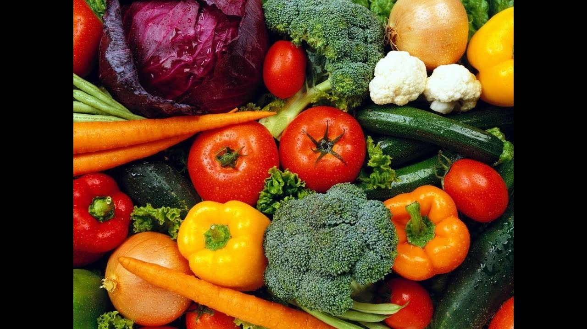

Nombres de Vegetales en Español [Verduras y Vegetales Verdes]
2020.09.14 13:19
Nombres De.Org
Menú Home Hombres Mujeres Bebés Niñas Perros Perritas Gatos Guerreras MitológicasNombres de Vegetales en Español
Seguramente ya conoces algunos de los vegetales que usas día a día ¿Verdad? Asimismo, encontrarás aquí algunos de los nombres en español más comunes de los vegetales.
Tal vez tu madre te ha preparado muchas veces desde niño unas comidas con muchos vegetales, pues siempre te decía que son muy buenos para la salud ¿No es así? Y tenía mucha razón, pues tus padres son muy sabios, y si te enseñan a comerte todos los vegetales de tu plato, es porque sabe que más adelante serán de mucho beneficio para tu vida.
Nombres de Vegetales en Español
Recorrido Rápido
1 Nombres de Vegetales en Español 2 7 nombres de vegetales magníficos para tu salud 2.1 El tomate 2.2 El brócoli 2.3 La col de Bruselas 2.4 La zanahoria 2.5 El calabacín 2.6 La berenjena 2.7 Los pimientos 2.7.1 Llegaste Buscando:Por lo mismo, los vegetales contienen altas vitaminas y minerales, las necesarias para que tu cuerpo esté bien sano y tu salud mental también sea muy grata. Pues, los vegetales no sólo te ayudan a mantener tu cuerpo invulnerable en muchas ocasiones de enfermedades muy peligrosas, sino que también te ayuda a los pensamientos y en todo lo que respecta al cerebro y las emociones como tal.
Por otra parte, los vegetales son productos que están totalmente a tu alcance, pues los puedes encontrar en tu propio hogar, sólo se necesita una tierra fértil unas semillas y agua, así las puedes sembrar y cosechar tus vegetales sin necesidad de gastar mucho tiempo ni dinero.
Estás Buscando Nombres? Mira a continuación Los Mejores: Nombres de Hombres Nombres de Mujeres Nombres de BebésNombres de Vegetales en Español
A parte, también son muy económicos, ya que son producto de una cosecha propia, puedes encontrar a la venta muchos vegetales con precios muy accesibles en el mercado o en cualquier tienda de hortalizas en el país.
Te puede Interesar : Nombres de Bosques del MundoPara variar, los vegetales tienen un alto consumo en el mundo, por la misma razón de que son sazonadores para una comida casera o de restaurante de lo más espectacular ¿No es cierto?
Por eso, hoy vas a conocer algunos de los nombres de los vegetales más comunes y deliciosos que puedes utilizar en tu cocina y a tu gusto, así sabrás también lo importante que son para todas las personas, y sobre todo para ti, porque para cuando tengas alguna dolencia o enfermedad, no será tan grave como lo sería si no comieras vegetales más constantemente.
7 nombres de vegetales magníficos para tu salud
Si bien, cómo ya sabes, los vegetales son los más increíbles nutrientes en todo el mundo, también conocerás que, los vegetales, te brindan beneficios fantásticos a la hora de verte bien y sentirte bien en el largo viaje que tienes en tu vida.
Por supuesto, tu salud es lo más importante para ti ¿Cierto? Y para eso, necesitas conocer lo que te hace bien y lo que te hace mal, puesto que comer la comida rápida todo el tiempo no es bueno para tu salud, los vegetales son, al contrario, tienen grandes beneficios, y muy pronto los conocerás.
Ahora bien, aquí están 7 de los vegetales más comunes y más increíbles para deleitarse de su sabrosura y sus nutrientes tan maravillosos, que no te arrepentirás de haberlos conocido.
El tomate
Bien la conocerás cómo una fruta técnicamente, pero también se cree que es un vegetal, pero no importa, pues sea lo que sea es un alimento muy necesario para disfrutarlo en tus comidas, ya que contienen propiedades que ayudan a prevenir el cáncer, es un poderoso antioxidante, y brinda muchas vitaminas a partir de la A y hasta llegar a la K, y a parte te ayuda con la hipertensión.
El brócoli
Éste particular vegetal es maravilloso, ya que ayuda a controlar el riesgo de sufrir cáncer en un futuro, específicamente el de pulmón, estómago ó de colon, debido a su gran contenido vitamínico de antioxidantes. A parte, contiene en gran cantidad la vitamina C y ácido fólico, por lo que es un increíble reforzador para tu sistema inmunológico.
La col de Bruselas
Cómo bien se ha previsto, éste es un vegetal muy necesario para las mujeres que están deseando con muchas ganas quedar embarazadas, ya que su gran contenido de ácido fólico es muy crucial para el buen desarrollo del bebé y así prevenir el que puedan sufrir de malformaciones. A parte, es increíble para tí, porque posee vitaminas K y C, potasio, fibra y mucho omega tres.
La zanahoria
Sin duda, los más magníficos alimentos son los anaranjados, sobre todo para el favorecimiento de tu cabello, ojos y piel. Pues, la zanahoria te brinda una gran cantidad de vitamina A, necesaria para tu cuerpo, así cómo te brinda vitamina C, aunque no en mucha cantidad, pero al parecer te ayudará en gran manera a prevenir las consecuencias o enfermedades cardiovasculares.
El calabacín
Otro vegetal de los grandes vitamínicos es éste, el calabacín, ya que es rico en fibra, potasio y magnesio. Además, es un potente y maravilloso antiinflamatorio, que te ayudará a prevenirte de asma, y otras enfermedades cómo la artritis de reumatoide y la osteoartritis. Asimismo, es un vegetal muy rico en vitamina C, por lo que lo hace un gran integrante para tu alimentación.
La berenjena
A parte de ser un muy delicioso vegetal, te ayuda a los problemas del corazón y de las afecciones cardiovasculares. Así, su gran contenido de antioxidantes es grandioso para la prevención de afecciones cerebrales, aparte de que, por su combinación con el potasio y la fibra, es un excelente ayudante para prevenir la rara enfermedad de demencia.
Los pimientos
Principalmente, tienes que saber que existen diversos pimientos, es decir de muchos tipos, los cuáles son todos muy saludables y necesarios para la creación de platillos muy deliciosos, pues su alto contenido de licopeno y ácido fólico, por lo que los expertos suponen que, el comerte un pimiento diariamente, te será muy útil para prevenir el peligro de cáncer de colon, vejiga, pulmón y páncreas.
Te puede Interesar : Nombres de Árboles Comunes y CientíficosCómo ya te habrás dado cuenta, los vegetales son el principal alimento al momento de tú necesitar cualquier tipo de vitaminas que te serán de muchos beneficios en lo que respecta a tu salud física y mental. Además, no son unos malos ingredientes para que tú alimento obtenga un delicioso y auténtico sabor, por lo que siempre es grandioso tenerlo en cuenta para tus alimentos.
Recuerda que la alimentación es una grandiosa arma para el mantenimiento de tu salud en un alto nivel de calidad, por lo que tus alimentos deben ser los más saludables y dueños de los más increíbles contenidos de vitaminas cómo lo son los vegetales que las contienen.
Califica este ArtículoLlegaste Buscando:
nombres de verduras en espanolNombres De:
Nombres de Hongos Comestibles y Venenosos diciembre 9, 2017 • No Comment Nombres de Montañas del Mundo diciembre 3, 2017 • No Comment Nombres de Plantas Medicinales y Para Qué Sirven noviembre 28, 2017 • No Comment Nombres de Plantas Comunes noviembre 10, 2017 • No Comment Nombres de Flores Amarillas noviembre 7, 2017 • No Comment Nombres de Verduras y Hortalizas noviembre 4, 2017 • No Comment Nombres de Vegetales en Español noviembre 3, 2017 • No Comment Nombres de Bosques del Mundo octubre 28, 2017 • No Comment Nombres de Árboles Comunes y Científicos octubre 23, 2017 • No Comment Nombres de Flores Moradas con Blanco octubre 9, 2017 • No Comment Nombres De.Org Copyright © 2020. Copyright © 2017 Políticas de Privacidad Terminos y Condición de Uso Mapa del Sitio Utilizamos cookies para asegurar que damos la mejor experiencia al usuario en nuestro sitio web. Si continúa utilizando este sitio asumiremos que está de acuerdo. Estoy de acuerdo Política de privacidad- Importancia de los Vegetales
- 253 mejores imágenes de Laminas de Vegetales y Legumbres ...
- Vegetales | Vegetales24
- 'Chips' vegetales: ¿son más sanas que las patatas fritas ...
- Albóndigas vegetales -Mejor Con Salud-
- Vegetales – Incalfer
- Vallejo Frutas y Vegetales
- Frutas y Vegetales en Inglés - Abingles.com
- VEGGIE PACK Panamá – Delivery de Vegetales y Frutas Frescas
- Nombres de Vegetales en Español [Verduras y Vegetales Verdes]
- Importancia de los Vegetales
Vegetables | Vegetales . Spain's finest vegetables can now grace your dinner table. Choose from such popular brands as Viter, Mamia, and more. These vegetables are especially delicious when accompanying your favorite fish, meat or poultry dish. Hida Roasted Piquillo Peppers With Fried Tomato Net.Wt 340 Gr.
- 253 mejores imágenes de Laminas de Vegetales y Legumbres ...
Los vegetales en ambos casos son remolacha, boniato y chirivía; y —según dicen los paquetes— no tienen ni sabores ni colorantes añadidos. Es cierto, al igual que en la anterior, el gusto de ...
- Vegetales | Vegetales24
Los vegetales que hoy consumimos, tanto frutas como verduras en su enorme diversidad, han sido alguna vez domesticadas por diferentes grupos de seres humanos: mientras en Europa siempre fue central el trigo, en América se había desarrollado profundamente el cultivo del maíz.En la actualidad, cada región del planeta posee un detallado calendario de plantación de vegetales que tiene que ver ...
- 'Chips' vegetales: ¿son más sanas que las patatas fritas ...
Hay algunos vegetales que simplemente crecen mejor, más rápido y más abundante en macetas! Por esto hemos decidido juntar los mejores 20 vegetales para cultivar en macetas. Esto no requiere espacio de jardín, así que incluso si vives en un apartamento, un balcón debería ser más que suficiente para cultivar cualquiera de estos! Vegetales Para Cultivar En Macetas #1.
- Albóndigas vegetales -Mejor Con Salud-
B Vegetales. Perejil Por 200gr $ 1.25. Frutas. Quick View. Frutas, Otros Productos. Jugo de Naranja Por 1/2 Galon $ 5.25. Añadir a la lista de deseos. Añadir al carrito. Quick View. Frutas. Papaya Por Unidad $ 1.75. Añadir a la lista de deseos. Añadir al carrito. Quick View. Frutas. Kiwi Por Unidad $ 0.50. Añadir a la lista de deseos ...
- Vegetales – Incalfer
Aunque el pescado es una buena fuente de ácidos grasos omega-3, también se pueden encontrar en muchos vegetales como las coles de Bruselas, col rizada, espinacas y ensalada de verduras de hojas. Alimentos ricos en vitamina E.
- Vallejo Frutas y Vegetales
Frutas y vegetales en el idioma inglés. Como se escriben y como se dicen en ingles
- Frutas y Vegetales en Inglés - Abingles.com
Frutas y verduras que son contables Todo lo que sea contable podemos expresarlo como una determinada cantidad: - O nion (cebolla) - Grape (uva) - Pear (pera) - P each (durazno) - R adish (rábano) - E ggplant (berenjena) - P epper (pimentón) - P ineapple (Piña) - B anana (cambur) - Orange (naranja)
- VEGGIE PACK Panamá – Delivery de Vegetales y Frutas Frescas
Pronunciación en inglés de vegetables. Aprende a pronunciar vegetables en inglés con videos, audio y desgloses silábicos de los Estados Unidos y el Reino Unido.
- Nombres de Vegetales en Español [Verduras y Vegetales Verdes]
Las líneas para procesado de vegetales ofrecen la más moderna tecnología para procesos contínuos, adaptados a las necesidades de producción y posibilidades económicas de los procesadores de vegetales. El diseño modular y la gran variedad de equipos disponibles permiten configurar la línea ideal para cada aplicación.
Vegetables | Vegetales . Spain's finest vegetables can now grace your dinner table. Choose from such popular brands as Viter, Mamia, and more. These vegetables are especially delicious when accompanying your favorite fish, meat or poultry dish. Hida Roasted Piquillo Peppers With Fried Tomato Net.Wt 340 Gr.
Los vegetales en ambos casos son remolacha, boniato y chirivía; y —según dicen los paquetes— no tienen ni sabores ni colorantes añadidos. Es cierto, al igual que en la anterior, el gusto de ...
Los vegetales que hoy consumimos, tanto frutas como verduras en su enorme diversidad, han sido alguna vez domesticadas por diferentes grupos de seres humanos: mientras en Europa siempre fue central el trigo, en América se había desarrollado profundamente el cultivo del maíz.En la actualidad, cada región del planeta posee un detallado calendario de plantación de vegetales que tiene que ver ...
Hay algunos vegetales que simplemente crecen mejor, más rápido y más abundante en macetas! Por esto hemos decidido juntar los mejores 20 vegetales para cultivar en macetas. Esto no requiere espacio de jardín, así que incluso si vives en un apartamento, un balcón debería ser más que suficiente para cultivar cualquiera de estos! Vegetales Para Cultivar En Macetas #1.
B Vegetales. Perejil Por 200gr $ 1.25. Frutas. Quick View. Frutas, Otros Productos. Jugo de Naranja Por 1/2 Galon $ 5.25. Añadir a la lista de deseos. Añadir al carrito. Quick View. Frutas. Papaya Por Unidad $ 1.75. Añadir a la lista de deseos. Añadir al carrito. Quick View. Frutas. Kiwi Por Unidad $ 0.50. Añadir a la lista de deseos ...
Aunque el pescado es una buena fuente de ácidos grasos omega-3, también se pueden encontrar en muchos vegetales como las coles de Bruselas, col rizada, espinacas y ensalada de verduras de hojas. Alimentos ricos en vitamina E.
Frutas y vegetales en el idioma inglés. Como se escriben y como se dicen en ingles
Frutas y verduras que son contables Todo lo que sea contable podemos expresarlo como una determinada cantidad: - O nion (cebolla) - Grape (uva) - Pear (pera) - P each (durazno) - R adish (rábano) - E ggplant (berenjena) - P epper (pimentón) - P ineapple (Piña) - B anana (cambur) - Orange (naranja)
Pronunciación en inglés de vegetables. Aprende a pronunciar vegetables en inglés con videos, audio y desgloses silábicos de los Estados Unidos y el Reino Unido.
Las líneas para procesado de vegetales ofrecen la más moderna tecnología para procesos contínuos, adaptados a las necesidades de producción y posibilidades económicas de los procesadores de vegetales. El diseño modular y la gran variedad de equipos disponibles permiten configurar la línea ideal para cada aplicación.
